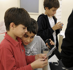

You are hereNews
News
Le ultime notizie di PalermoScienza
Costruire e interpretare le mappe: tra l'isola che non c'è e la fantasia dei bambini!
Lunedì 20 gennaio, nella sede del Centro per la scienza sito presso l'IC Cruillas di Palermo (via Salerno 19), l'associazione PALERMOSCIENZA ha dato il via alle visite guidate dedicate alla mostra Costruire e interpretare le mappe, fase conclusiva di un progetto annuale finanziato dal MIUR. Gli esperti dell'associazione hanno guidato i piccoli visitatori in un percorso incentrato sui nuovi exhibit ispirati alla cartografia e alla rappresentazione del territorio, che da poco arricchiscono la mostra permanente già esistente.
Tra questi, tre exhibit realizzati dagli studenti dell'Istituto d'Arte V. Ragusa e O. Kjoara di Palermo e uno ideato dall'associazione PALERMOSCIENZA, la cui progettazione esecutiva e realizzazione è a cura di Agostino Di Trapani.
Sarà possibile visitare la mostra da lunedì 27 a giovedì 30 gennaio, dalle 9.30 alle 13.00, su prenotazione. Per ulteriori informazioni contattare i seguenti numeri telefonici (attivi dalle 10.00 alle 13.00 e dalle 16.00 alle 19.00):
366 8028227 / 333 4612148
o scrivere a:
Nel video le immagini di una delle prime visite guidate, con alcuni piccoli visitatori ricchi di fantasia e voglia di scoprire.
Vi aspettiamo!
Costruire e interpretare le mappe
L'associazione PALERMOSCIENZA è lieta di invitarvi all'inaugurazione della mostra "Costruire e interpretare le mappe" che si terrà lunedì 20 gennaio, alle ore 10.00, nella sede del Centro per la scienza di Palermo, sito presso l'IC Cruillas, (via Salerno 19).
La mostra è la fase conclusiva di un progetto annuale finanziato dal MIUR e incentrato sulle mappe. Propone un percorso guidato tra i nuovi exhibit ispirati alla cartografia e alla rappresentazione del territorio, che da poco arricchiscono la mostra permanente già esistente. Tra questi, tre exhibit realizzati dagli studenti dell'Istituto d'Arte V. Ragusa e O. Kjoara di Palermo e uno ideato dall'associazione PALERMOSCIENZA, la cui progettazione esecutiva e realizzazione è a cura di Agostino Di Trapani.
Sarà possibile visitare la mostra da lunedì 20 a venerdì 24 gennaio e da lunedì 27 a giovedì 30 gennaio, dalle 9.30 alle 13.00, su prenotazione e aderendo a uno dei seguenti turni: 9.30-10.30; 10.45-11.45 e 12.00-13.00.
L'ingresso è gratuito.
Per prenotare la visita contattare i seguenti numeri telefonici (attivi dalle 10.00 alle 13.00 e dalle 16.00 alle 19.00):
366 8028227 / 333 4612148
o scrivere a:
Vi aspettiamo!
La Scienza con Leggerezza... da Mondadori Multicenter: l'anno nuovo continua con l'astronomia!
Continua il progetto Mappe e Percorsi, il ciclo di laboratori dedicati ai bambini e ai ragazzi di diverse fasce di età (5-12 anni), ideato dall'associazione PALERMOSCIENZA, in collaborazione con Mondadori Multicenter.
Con il laboratorio 38°N 13°E... mi sono perso! incentrato sull'astronomia realizzeremo mappe stellari, costruiremo oggetti per individuare la posizione delle stelle rispetto all'orizzonte, approfondiremo la conoscenza del Sistema Solare e della fisica delle stelle realizzando dei modellini, guarderemo video e programmi interattivi.
Vi diamo appuntamento tutti i mercoledì di gennaio, a partire da giorno 8 fino a giorno 29, sempre dalle 16.30 alle 18.30, presso la Sala Eventi di Mondadori Multicenter (via Ruggero Settimo,18).
I laboratori sono a pagamento. Per le modalità di partecipazione e ulteriori notizie consultare la brochure o contattare:
3668028227
3334612148
Vi aspettiamo!

La Scienza con Leggerezza... da Mondadori Multicenter: a novembre si gioca con la matematica!
Continua il progetto Mappe e Percorsi, un ciclo di laboratori dedicati ai bambini e ai ragazzi di diverse fasce di età, ideato dall'associazione PALERMOSCIENZA, in collaborazione con Mondadori Multicenter.
Il terzo incontro del laboratorio La matematica è dietro l'angolo sarà martedì 19 novembre, sempre alle 16.30, presso la Sala Eventi di Mondadori Multicenter (via Ruggero Settimo,18) e sarà dedicato alle proporzioni e alle riproduzioni in scala di diversi oggetti e ambienti.
Il quarto incontro di martedì 26 chiuderà i laboratori dedicati alla matematica e conosceremo l'esperto che nel mese di dicembre ci condurrà alla scoperta dell'astronomia con il laboratorio 38°N 13°E... mi sono perso!
I laboratori sono a pagamento. Per le modalità di partecipazione e ulteriori notizie consultare la brochure.
Al via i laboratori "La scienza con leggerezza... da Mondadori Multicenter"
L'associazione PALERMOSCIENZA in collaborazione con Mondadori Multicenter dà il via al progetto Mappe e Percorsi, un ciclo di laboratori dedicati ai bambini e ai ragazzi di diverse fasce di età.
Gli incontri, organizzati per tematiche mensili legate da un filo conduttore, spazieranno dall'ambiente all'astronomia, biologia, chimica, fisica, geologia, matematica e musica. Ogni incontro sarà auto-consistente in modo che i partecipanti realizzino comunque un oggetto finale pertinente alla tematica sviluppata.
Si inizierà con il laboratorio La matematica è dietro l'angolo.
Mercoledì 6 novembre, alle ore 16.30, presso la Sala Eventi di Mondadori Multicenter (via Ruggero Settimo,18), cominceremo a interagire, giocare, costruire, inventare partendo dalle bolle di sapone e dalla riproduzione in scala di oggetti, guardando video e programmi interattivi che saranno il nucleo degli incontri.
Continueremo mercoledì 13 con il secondo incontro e poi martedì 19 e martedì 26, per il terzo e il quarto incontro di novembre.
Il mese di dicembre sarà invece dedicato all'astronomia con il laboratorio 38°N 13°E... mi sono perso!
Vi aspettiamo!
foto di ankakay
La scienza con leggerezza... da Mondadori Multicenter
L'associazione PALERMOSCIENZA in collaborazione con Mondadori Multicenter presenta il progetto Mappe e Percorsi, un ciclo di laboratori dedicati ai bambini e ai ragazzi di diverse fasce di età. Gli incontri, organizzati per tematiche mensili legate da un filo conduttore, spazieranno dall'ambiente all'astronomia, biologia, chimica, fisica, geologia, matematica e musica. Ogni incontro sarà auto-consistente in modo che i partecipanti realizzino comunque un oggetto finale pertinente alla tematica sviluppata.
Dai primi di novembre ai primi di maggio, la Sala Eventi di Mondadori Multicenter via Ruggero Settimo,18 si trasformerà in un grande laboratorio di idee: esperti di varie discipline coinvolgeranno i partecipanti in laboratori settimanali, trasformandoli in piccoli scienziati, rendendoli attori delle loro scoperte e creazioni e stimolando la loro voglia di imparare, comprendere e comunicare attraverso il gioco e la manualità.
Per scoprire altri particolari e assistere a un'anteprima delle attività vi invitiamo alla presentazione dei laboratori che si terrà venerdì 25 ottobre 2013, alle ore 18.00 presso la Sala Eventi di Mondadori Multicenter.
Vi aspettiamo!
Le Vie dei Tesori: secondo appuntamento con PALERMOSCIENZA
Nell'ambito della manifestazione Le Vie dei Tesori organizzata dall'Università degli Studi di Palermo e incentrata sulle cinque tematiche Eresia, Città sotterranea, Interculturalità, Donne, il Gattopardo, l'associazione PALERMOSCIENZA sarà presente con tre appuntamenti.
Il secondo appuntamento in calendario è il laboratorio La Scienza? Roba da donne che, partendo dal tema Donne e scienza, propone un percorso incentrato sull'elettromagnetismo e sull'acustica dedicato ai ragazzi delle scuole secondarie di primo e di secondo grado.
Sabato 19 ottobre, dalle ore 9.30 alle ore 13.30, presso la sede del Museo dei Motori e dei Meccanismi (Facoltà di Ingegneria, Viale delle Scienze, edificio 8), gli esperti dell'associazione PALERMOSCIENZA - rigorosamente donne - coinvolgeranno i partecipanti in esperimenti sulle proprietà magnetiche della materia con l'uso di inaspettati prodotti e metteranno alla prova i diversi registri canori dei ragazzi utilizzando i sensori di suono.
Per partecipare al laboratorio è necessario prenotare (entro le 13 di venerdì 18).
Per informazioni e prenotazioni chiamare i numeri del Call Center, attivi tutti i giorni dalle ore 10.00 alle ore 18.00:
091.23893756 / 091.23893757 / 091.2389375
Vi aspettiamo!
Le Vie dei Tesori: con PALERMOSCIENZA a La Notte della Luna
Dall'11 ottobre al 3 novembre 2013, per quattro fine-settimana, si svolgerà nella nostra città Le Vie dei Tesori, manifestazione organizzata dall'Università degli Studi di Palermo e incentrata su cinque tematiche - Eresia, Città sotterranea , Interculturalità, Donne, il Gattopardo - ispirate ad alcuni degli spazi aperti in occasione della manifestazione (http://www.leviedeitesori.it/levento.html).
L'associazione PALERMOSCIENZA sarà presente con tre appuntamenti, il primo dei quali è la Notte della Luna che ricalca l'evento mondiale Moonwatch Party, dedicato all'osservazione del nostro satellite naturale.
Sabato 12 ottobre, dalle 20.00 alle 24.00, presso i cortili di Palazzo Steri, (Piazza Marina, 61) gli esperti di PALERMOSCIENZA, in collaborazione con l'INAF - Osservatorio Astronomico di Palermo, guideranno i visitatori nell'osservazione ai telescopi della Luna e intratterranno i più piccoli con laboratori a carattere esclusivamente astronomico.
In linea con le tematiche Eresia e Interculturalità, la figura di Galileo sarà svelata in tutti i suoi aspetti, si giocherà a nascondino con la Luna e, tra una scoperta e l'altra, ricostruzioni e presentazioni multimediali a tema, non potevano mancare i biscotti "lunari".
Vi aspettiamo!
Ingresso libero fino a esaurimento posti.
PALERMOSCIENZA partecipa alla European Researchers’ Night 2013
Venerdì 27 settembre avrà luogo la European Researchers’ Night, evento che da anni coinvolge i ricercatori e le istituzioni di ricerca di tutti i paesi europei con lo scopo di far conoscere ai cittadini le diverse attività di ricerca e l’importanza dei risultati ottenuti.
L’evento che coinvolge la nostra città è stato organizzato dall’INAF – Osservatorio Astronomico di Palermo, insieme a Urania, al Piano Lauree Scientifiche, al Dipartimento di Robotica dell'Università di Palermo, al Sistema Museale d'Ateneo e all'Associazione PALERMOSCIENZA (http://www.astropa.unipa.it/EuresNight2013.html).
Dalle 20.00 alle 24.00, presso il Planetario di Villa Filippina (Piazza S. Francesco di Paola n.18), in uno scenario ricco di iniziative di diverso carattere – spettacoli sotto la cupola del Planetario, mostre, osservazioni ai telescopi, concerto rock, ecc., - l’associazione PALERMOSCIENZA proporrà laboratori incentrati sulla cromatografia, sulle ombre colorate, sulle illusioni ottiche e altro ancora.
Vi aspettiamo numerosi!
Al via i primi appuntamenti di PALERMOSCIENZA
Sul finire dell'estate cittadina si aprirà la Settimana delle Culture, ideata, promossa e organizzata dal Comitato "Insieme per Palermo" con la collaborazione dell’Assessorato alla Cultura del Comune di Palermo e la partecipazione di partner pubblici e privati, a supporto della candidatura di Palermo a Capitale Europea della Cultura 2019.
Gli appuntamenti in programma sono numerosi e di differente natura: dal 16 al 22 settembre, diverse zone cittadine - tra le quali i Cantieri Culturali alla Zisa in veste di “cittadella della cultura” - ospiteranno attività incentrate su fotografia, danza, teatro, musica, visite guidate e molto altro ancora, per riscoprire il carattere multietnico e multiculturale della città.
All'interno della Settimana delle Culture è inserita l'iniziativa "7 Scuole X 7 Musei" che coinvolge alcuni dei musei degli Istituti scolastici della città di Palermo.
Per l’occasione, l'associazione PALERMOSCIENZA e l’Istituto Comprensivo Statale Cruillas apriranno al pubblico il Centro per la Scienza, che ospita la mostra permanente di exhibit scientifici costruiti dall’associazione PALERMOSCIENZA, dagli Istituti IC Padre Pino Puglisi, il liceo scientifico S. Cannizzaro e l’Istituto d'Arte V. Ragusa e O. Kjoara di Palermo.
Il Centro ha sede presso l’IC Cruillas (via Salerno 19) e sarà aperto mercoledì 18 e giovedì 19 settembre 2013 dalle ore 8.30 alle ore 12.30.
Per informazioni e prenotazioni:
segreteria associazione
3668028227 / 3334612148
dal lunedì al venerdì dalle ore 10,00 alle ore 13,00 e dalle 16,00 alle 19,00